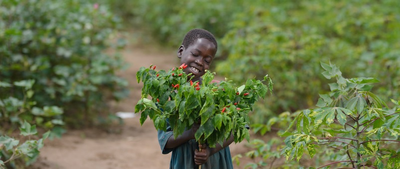
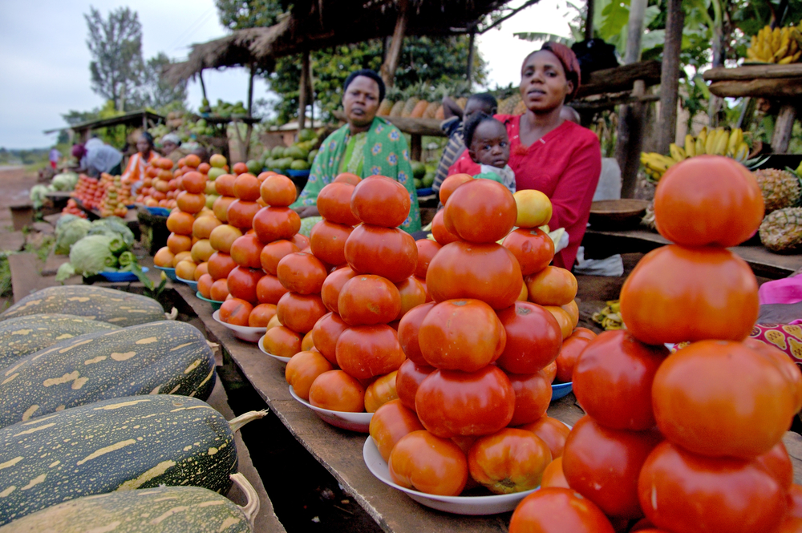

40%
The agriculture sector of the Ugandan economy, takes up about 40% of the country's GDP
Profits
cocoa, bananas, and tobacco are the most profitable crops
60%
Over 60% of Uganda's labour force is employed within the agricultural sector with most groups of farmers being made up of family members
2nd in Africa
Ethiopia was the leading exporter, earning around 1.5 billion dollars, followed by Uganda with an export value of nearly 813 million dollars during the same year